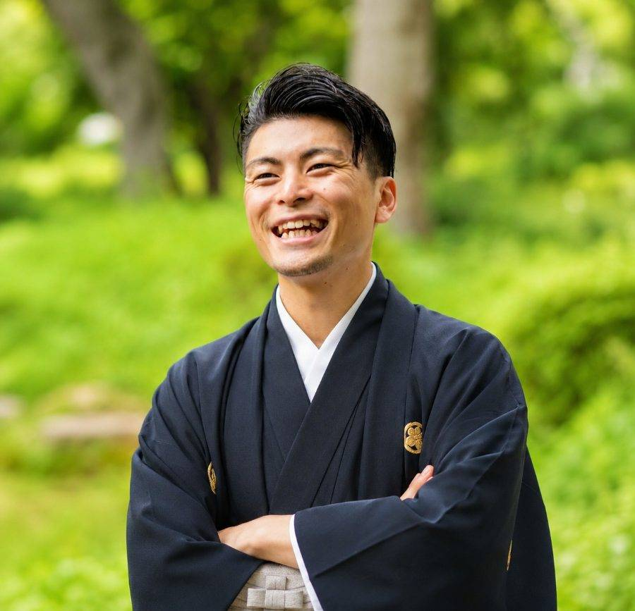

綿内賢志の人生の挫折
「自分には、何もできない。
存在する価値もないんじゃないか。」
かつて、私も同じ思いを抱いていました。
仕事は順調。給料も悪くない。
でも、心の奥底から
「自分として生まれてきて、
本当によかった」
と思えたことはありますか？
多くの人は、その問いに答えられません。
それは、あなたが弱いからではありません。
あなたが足りないからではありません。
ただ、まだ気づいていないだけです。
20代後半から30代前半は、仕事の要領を掴む一方で「キャリアの踊り場」を迎えます。
「自分の人生はこのままでいいのか」と人生の意義を見失いやすい時期です。
これは心理学でも立証された正常な葛藤です。
1日中PCに向かい、データを処理する日々。
自分の仕事が「誰の役に立っているか」という物理的な実感が得にくく、社会の歯車として労働のリアリティと誇りを喪失しやすい構造に置かれています。
日本社会において、男性は無意識のうちに「仕事でのステータスが自分の価値」と思い込まされがちです。
そのため、仕事に意味を見出せなくなった瞬間、自己肯定感が根底から揺らいでしまうのです。
これらが重なる今、
あなたが「自分の根っこ」を
見つめ直そうとするのは、
極めて自然で、
必要な防衛反応なのです。
「自分には、何もできない。
存在する価値もないんじゃないか。」
かつて、私も同じ思いを抱いていました。

自分は、一人で生きているんじゃない。
幾千の命が、自分を生かしてくれている。
その瞬間、命の尊さへの理解が、深い「安心感」となり、自分の人生に誇りが戻りました。
あなたが突き抜けるための原動力は、外側ではなく、
あなた自身の歴史（ルーツ）の中にすでに存在しています。
自分の命の系譜を知り、
何のために生かされているのかを深く悟る。
これを紐解き、
あなたの「命の価値」を
再認識するためのプログラム。
それが、この『Roots』です。
知識はすぐに古くなりますが、本質的な「問い」は一生の財産です。
自らの内側から答えを引き出し、人生の目的を圧倒的な解像度で再定義します。
家系を紐解くことで、自分の命が数千年の祈りの結晶であることを体感します。
他者比較ではない、揺るぎない自己信頼を確立します。
人生の根っこを共有し、互いの「志」を本気で応援し合えるコミュニティ。
一人では辿り着けない深い気づきを、同志と共に獲得します。
自分の人生に誇りを持ち、「自分として生まれてきて本当によかった」と心から思えている状態。
それは単なる自信ではなく、自分の命の価値を他者に提供できる「真の教育者」となった状態です。
あなたが「自分の人生に誇り」を持つ。
その変化は日本の未来を作る、尊く大切な一部なのです。
当ページ下部のボタンより、「興味あり（賢志と話したい）」または「申し込み（詳細確認）」をご選択ください。
実際にお話しし、あなたの現状のモヤモヤや目標をお伺いします。無理な勧誘は一切ありません。
納得いただけましたら、あなたのルーツと向き合う本質的な旅がスタートします。

どん底の中で『Roots』と出会い、家系とルーツを知ることで自己信頼を取り戻す。
「答えは自分の中にある」という確信を胸に、より多くの日本人に自己信頼の火を灯すため、志範として活動中。
三世代家族で祖父・祖母と多くの時間を過ごし、家の歴史、土地の歴史、これまでの苦労の話を聞いて育つ。
その影響で人一倍強い郷土愛を持つ。大学では生物学を専攻するも、在学中の御縁により「人と関わりながら次世代に価値を遺す事業」を志す。
飲食業に転職し、約6年間店長を経験。「長いスパンで人の人生に深く関わり、【人を遺す】仕事がしたい」と決意し、2022年より日本最大の通信制高校に転職。
大分校のキャンパス長を務めながら、進路指導や職員育成に尽力。
2025年2月に初めて『Roots』を受講し、深く感銘を受ける。
「より多くの日本人に自己信頼の火を灯したい」と強く願い、志範（講師）として活動をスタート。